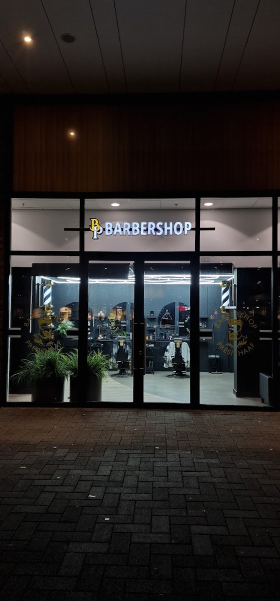

★★★★★
Er wordt veel aandacht besteed aan de details en er wordt ruim de tijd genomen, zodat de klant tevreden de deur uit gaat.
Alan SoraneBarbershop in Winkelcentrum Presikhaaf. Er wordt de tijd genomen die uw kapsel vraagt, en u krijgt eerlijk advies over wat wel en niet werkt.

Van de 171 reviews gaat het vijftien keer over hetzelfde: dat er niet gehaast wordt. Dat is geen toeval, dat is hoe hier gewerkt wordt.
Geen stoel die na twintig minuten leeg moet zijn. U gaat pas de deur uit als het klopt, en dat merkt u aan het resultaat.
Wat past bij uw haar en wat niet. Als iets niet gaat werken, hoort u dat voordat de tondeuse aangaat.
Zes reviews noemen het uit zichzelf. U zit hier even, en dat mag ook zo voelen.
Hieronder ziet u wat er vrij is. Kies een behandeling, een dag en een tijd, en het staat meteen genoteerd. Geen telefoontje nodig.
171 reviews op Google, allemaal vijf sterren
Er wordt veel aandacht besteed aan de details en er wordt ruim de tijd genomen, zodat de klant tevreden de deur uit gaat.
Alan SoraneIk ben bij aardig wat kappers geweest, maar deze ervaring was top. Je krijgt goed advies over je haar en het resultaat is geweldig.
Rick GunsingIk kom nu al ruim een jaar bij Barbershop Presikhaaf en de service en knipbeurt zijn voortreffelijk.
Jacco Rutten